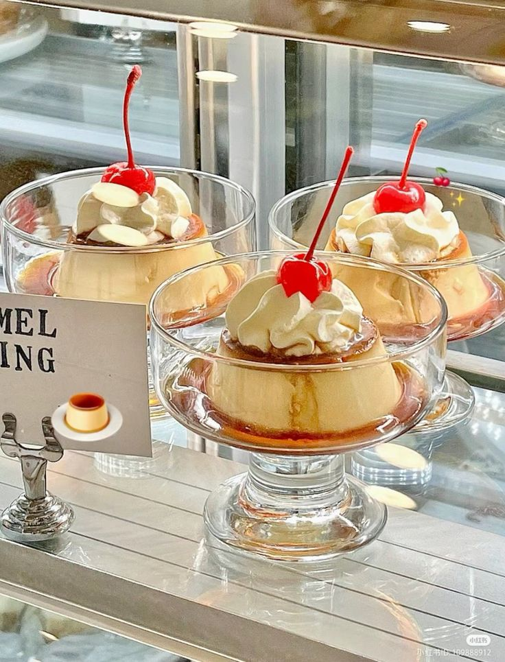

Milk Pudding

Description
Milk pudding is a popular Japanese dessert that is
deliciously smooth, creamy, and sweet.
Ingredients
Caramel Sauce
- 70 grams of granulated sugar
- 1 tbsp room temperature water
- 1 tbsp hot water
- Custard molds. Any of the below options work:
- Five 220-ml molds
- Six 150-ml molds
- Seven 120-ml molds
Custard
- 400 mL of whole milk
- 100 mL of heavy whipping cream
- 1/2 tsp of pure vanilla extract
- 3 large eggs (50 grams each without shell)
- 70 grams of granulated sugar
Bain-Marie
Steps
Making the caramel sauce
-
Preheat the oven to 300°F (150°C). For a convection oven,
reduce the cooking temperature by 25°F (15°C).
-
In a heavy-bottomed small saucepan, combine 70 grams of sugar
and 1 tbsp of room temperature water. Avoid using nonstick
saucepans. They tend to have thin bottoms and their inner
pot color makes it hard to see the caramel color.
-
On medium low heat, let the sugar dissolve completely.
Do not touch or stir the mixture. Let the sugar
turn to liquid. If necessary, tilt the pot occasionally
to help dissolve the sugar.
-
Start boiling 3-4 cups of hot water in a kettle and keep
it hot.
-
Once the sugar has fully dissolved, increase the heat to
medium or medium high. Swirl the saucepan once in a while
to stir the mixture, but do NOT use a utensil or
the sugar will crystalize. This should take about 5
minutes.
-
When the sugar starts to caramelize, you will see lots
of small bubbles. It will slowly turn brown on the edges
of the pan. Swirl the pot to incorporate the dark-colored
caramelized sugar into the light-colored sugar. Soon the
bubbles will become larger as the sugar mixture caramelizes
more and turns an amber color.
-
The caramelized sugar will continue to turn darker and
darker. Keep swirling the pot and watch it closely. Once
the caramel sauce starts smoking, wait a tiny bit longer
until it reaches an optimal dark caramel color. Then, turn
off the heat.
-
Hold a spatula over the pot. Pour a portion of the 1 tbsp
of hot water on the spatula and into the caramel pot.
The mixture will boil vigorously and sputter, so take care
not to let it splatter on you. Once this has subsided,
slowly add the rest of the hot water. Swirl the saucepan to
combine.
-
As soon as the hot caramel sauce is done, pour it directly
into the molds. It will cool and harden quickly. Aim for a
thin layer of caramel about 3 mm thick.
Making the custard
-
In a small saucepan, combine 400 mL of whole milk, 100 mL
of heavy whipping cream, and 1/2 tsp of pure vanilla
extract.
-
Whisk it all together. Turn the heat on to medium low
and bring the milk mixture to a simmer.
-
Crack 3 eggs into a large bowl and beat with a whisk
until smooth.
-
Add 70 grams of sugar to the eggs and mix until everything
is combined.
-
When small bubbles start to appear around the edges of
the saucepan, turn off the heat.
-
While whisking continulously, slowly add 1/3 of the hot
milk mixture into the egg mixture. Then, continue to add
the rest of the milk mixture slowly, again whisking
continulously. Mix it all together. Add the hot milk
mixture slowly to keep the eggs from
curdling.
-
Set a fine-mesh sieve over another bowl. Strain
the custard mixture through the sieve to remove any
lumps.
-
Evenly divide the custard mixture among the molds.
It's important that all of your molds have an equal
volume of custard so the cooking time will be the
same.
-
Using a lighter, burn off the bubbles on the surface
of the custard by quickly touching them with the
flame. You can also pop the bubbles with a toothpick
or scoop them off with a spoon, but this is time-
consuming.
Baking the custard
-
Place the molds in a baking dish that is at least
2.5 cm deep so we can add hot water to it. Then
put the dish on a baking sheet. The baking sheet
makes it easier to transfer the baking dish into
the oven after we pour hot water into it. Pour
enough hot water so that the molds are half
submerged.
-
Place the baking dish into the preheated oven and
bake for 35-45 minutes or until the custard is set.
If you are using larger or thicker molds, you may
need to cook it for 45-60 minutes.
-
Check for doneness by tilting the molds. If it is
done cooking, the surface of the pudding will be
slightly wobbly but no longer liquid.
-
Take out the molds from the water bath. Let cool
completely on a wire rack.
-
Once cooled, cover the molds with plastic or
aluminum foil and refridgerate for 2-3 hours.
Serving the pudding
-
Run a butter knife or offset spatula along the
edges of the mold to separate the pudding from
the mold.
-
Place a serving plate face down on top of the
mold.
-
Flip to release the pudding and caramel sauce from
its mold and onto the plate. If it does not fall
from the mold, try gently shaking the mold on the
plate.
Just One Cookbook